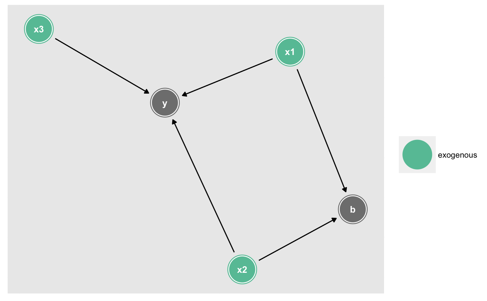

node_exogenous tags exogenous variables given an exposure and
outcome. ggdag_exogenous plots all exogenous variables. See
dagitty::exogenousVariables() for details.
node_exogenous(.dag, ...) ggdag_exogenous(.tdy_dag, ..., node_size = 16, text_size = 3.88, edge_type = "link_arc", text_col = "white", node = TRUE, text = TRUE, use_labels = NULL)
| .dag, .tdy_dag | input graph, an object of class |
|---|---|
| ... | additional arguments passed to |
| node_size | size of DAG node |
| text_size | size of DAG text |
| edge_type | a character vector, the edge geom to use. One of: "link_arc", which accounts for directed and bidirected edges, "link", "arc", or "diagonal" |
| text_col | color of DAG text |
| node | logical. Should nodes be included in the DAG? |
| text | logical. Should text be included in the DAG? |
| use_labels | a string. Variable to use for |
a tidy_dagitty with an exogenous column for
exogenous variables or a ggplot
node_exogenous(dag)#> # A tibble: 7 x 13 #> name from x y direction type to xend yend .ggraph.orig_ind… #> <chr> <chr> <dbl> <dbl> <fct> <fct> <chr> <dbl> <dbl> <int> #> 1 x1 x1 8.06 22.2 -> direct… b 7.73 21.1 1 #> 2 x1 x1 8.06 22.2 -> direct… y 6.99 22.9 1 #> 3 x2 x2 6.72 21.7 -> direct… b 7.73 21.1 2 #> 4 x2 x2 6.72 21.7 -> direct… y 6.99 22.9 2 #> 5 x3 x3 6.51 24.2 -> direct… y 6.99 22.9 3 #> 6 b b 7.73 21.1 <NA> <NA> <NA> NA NA 4 #> 7 y y 6.99 22.9 <NA> <NA> <NA> NA NA 5 #> # ... with 3 more variables: circular <lgl>, .ggraph.index <int>, #> # exogenous <chr>